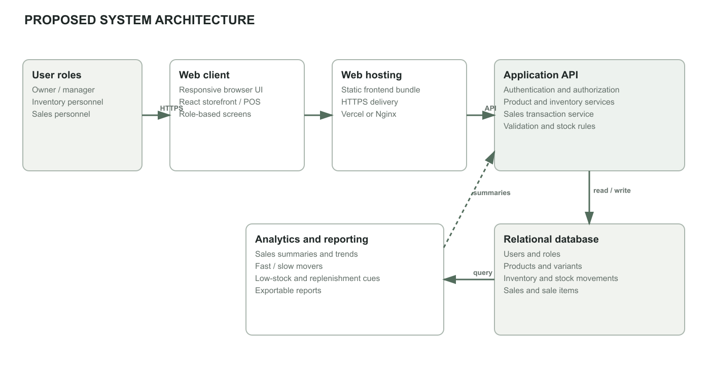
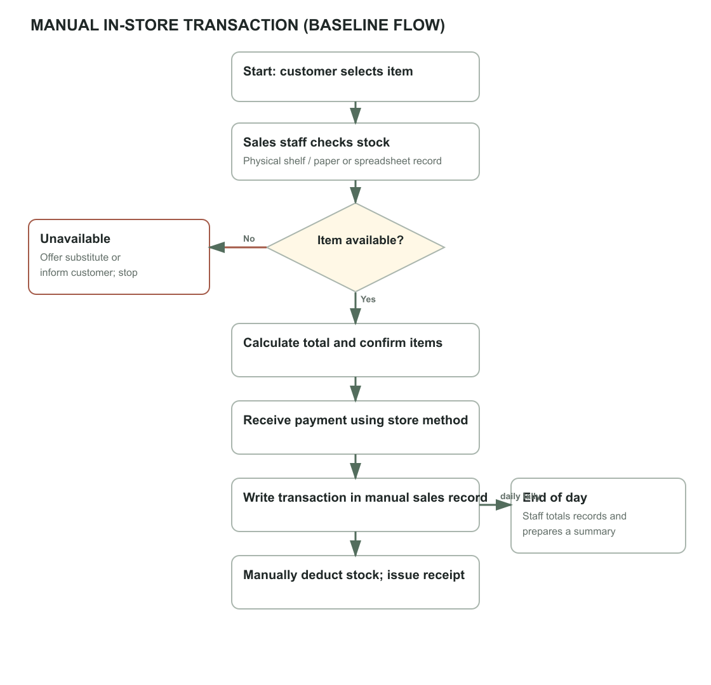
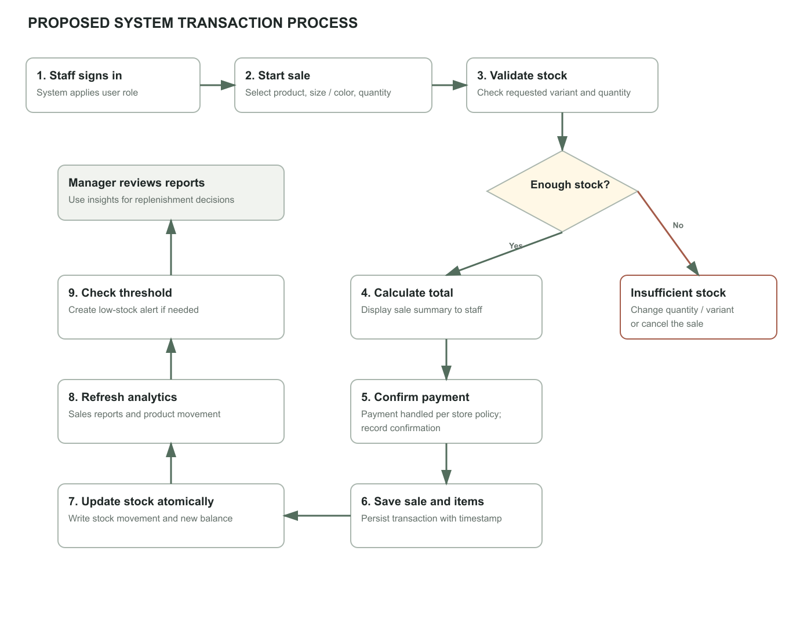
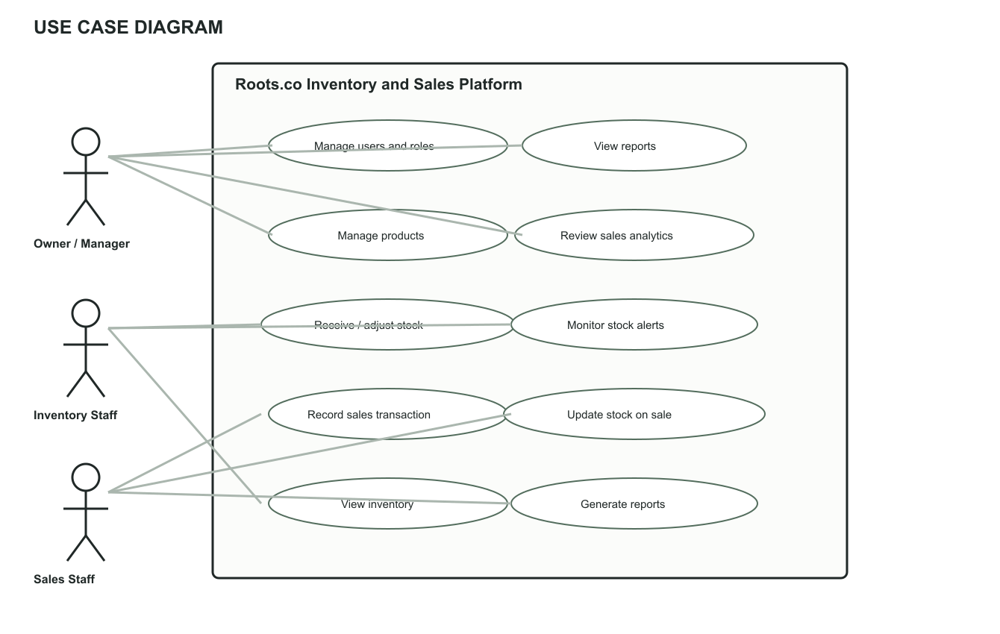
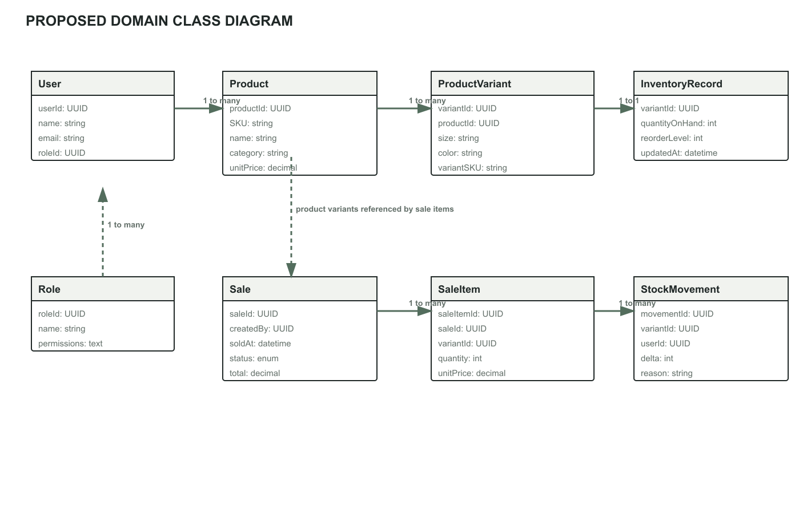
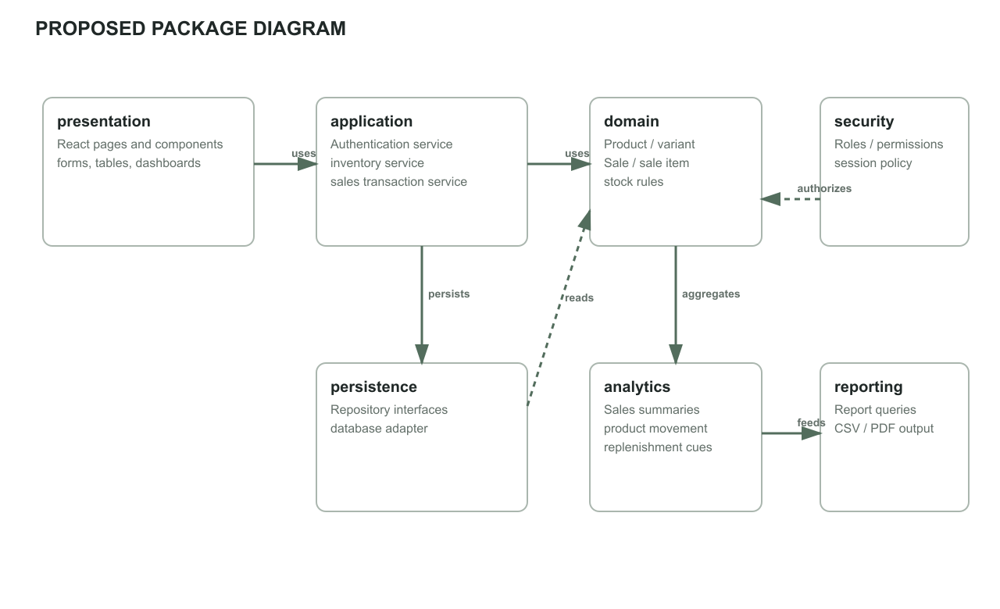
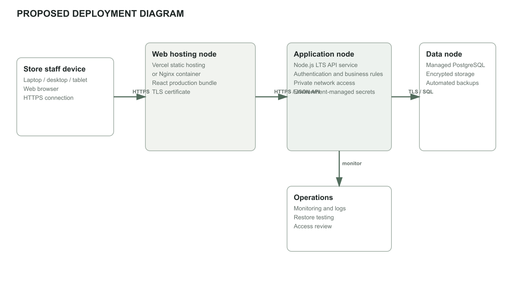

ROOTS.CO CLOTHING ENTERPRISES
Web Based Automated Inventory Optimization and Sales Analytics Platform
Supporting system documentation based on the supplied Chapters 1 and 2 and a review of the current Roots.co web application.
This document describes the proposed architecture, workflows, UML models, and technical requirements for the Web Based Automated Inventory Optimization and Sales Analytics Platform for Roots.co Clothing Enterprises. It follows the project scope stated in the supplied Chapters 1 and 2: product and inventory management, sales transaction recording, automatic stock updates, stock monitoring, low-stock identification, sales analysis, reports, and inventory decision support.
The manual transaction workflow below is a generalized baseline inferred from the proposal’s discussion of paper records, ledgers, and spreadsheets. Roots.co staff should validate the exact current sequence, payment handling, and end-of-day reconciliation before this workflow is adopted as a factual description of their operations.
The proposed system uses a browser-based client, a secure application API, a relational data store, and an analytics/reporting layer. Sales and inventory operations are performed through role-appropriate screens. A completed sale is persisted with its line items and corresponding stock movements so inventory and reports remain traceable. The payment method is handled according to the enterprise’s approved procedure; payment-gateway integration is not assumed by this design.

| Component | Responsibility |
|---|---|
| Browser client | Responsive interface for the owner/manager, sales personnel, and inventory personnel. Presents product, inventory, transaction, alert, and report screens. |
| Web hosting | Delivers the built frontend over HTTPS. The current project already supports static hosting through Vercel or Nginx. |
| Application API | Proposed server-side layer for authentication, authorization, product and inventory operations, transaction validation, stock updates, and report queries. |
| Relational database | Proposed persistent source of truth for users, roles, product variants, stock balances, sales, sale items, and stock movements. |
| Analytics/reporting | Calculates period summaries, product movement, low-stock status, and basic restock cues from recorded transactions and current inventory. |
| External payment handling | Payment is completed through the enterprise’s existing approved method and its confirmation is recorded. No payment provider is selected in the supplied proposal. |
In the baseline flow, a customer selects an item and sales staff check the available quantity against the physical stock and the business’s paper or spreadsheet record. If stock is available, staff total the items, accept payment using the current store method, write the transaction into a manual sales record, adjust the stock record, and issue a receipt. Records may then be tallied at the end of the day. The exact record format and payment steps require confirmation from Roots.co personnel.

The proposed sales process authenticates staff, validates each selected product variant and quantity against available stock, calculates the transaction total, and records the sale after staff confirm payment according to store policy. Saving the sale, sale items, stock movements, and updated stock balance should be performed as one database transaction to avoid partial updates. Updated records then feed dashboards and reports; a threshold check can raise a low-stock alert. Inventory replenishment remains a management decision, not an automatic purchase.

The diagram presents the main actors and system functions identified in the project scope. The Owner/Manager reviews analytics and reports and maintains users and products. Inventory Staff maintain stock and monitor alerts. Sales Staff record transactions, which result in stock updates. Customer-facing browsing and online payment are not represented as a POS requirement in this use case model.

| Actor | Primary use cases |
|---|---|
| Owner / Manager | Manage users and roles; manage products; review sales analytics; view inventory and sales reports; use replenishment cues to make stock decisions. |
| Inventory Staff | View inventory; receive and adjust stock; monitor low-stock and out-of-stock alerts; review stock movement records. |
| Sales Staff | View product availability; record a sale and its items; confirm payment using the enterprise’s approved process; issue or record a receipt reference. |
The proposed domain model separates products from product variants because apparel stock may differ by size and color. Inventory is held at the variant level. A sale contains one or more sale items; each sale item references a variant and quantity. Stock movements record both sale-related deductions and manual stock adjustments. User roles govern access to operations. This is a conceptual target model, not a diagram of the present React component implementation.

The package model separates presentation, application services, domain rules, persistence, security, analytics, and reporting responsibilities. The presentation layer calls application services rather than writing to the database directly. Analytics and reports consume persisted domain data. Authentication and authorization are applied at the application boundary and enforced server-side in the proposed implementation.

The deployment model separates static web delivery from business logic and persistent data. It is compatible with the existing Vercel or Nginx static frontend deployment while adding a proposed API service and managed relational database. These backend nodes are requirements for the target system and are not currently present in the deployed prototype. Production secrets must be stored in deployment environment configuration, not browser code.

The following are proposed minimum starting requirements for a small enterprise deployment. Server sizing is an initial estimate and should be confirmed through load testing and the expected number of concurrent users, transactions, and retained reports.
| Environment | Minimum requirement | Recommended / notes |
|---|---|---|
| Staff workstation | Dual-core processor; 4 GB RAM; 1366 × 768 display; current supported browser. | Modern quad-core processor; 8 GB RAM; 1920 × 1080 display for inventory and analytics tables. |
| Mobile / tablet access | Android 10 or later, or iOS 16 or later; 3 GB RAM; current browser. | Use for inventory lookups and lightweight adjustments; a larger display is preferred for reports and bulk editing. |
| Network | Stable broadband connection, approximately 5 Mbps available for the application. | Wired or reliable Wi-Fi for fixed checkout/inventory stations; provide a documented offline contingency because the system is web-based. |
| Application server | Cloud-hosted service with 2 vCPU and 4 GB RAM as an initial small-deployment baseline. | Scale based on load tests; TLS endpoint, monitoring, and automated deployment required. |
| Database server | Managed relational database with 2 vCPU, 4 GB RAM, and at least 20 GB SSD allocated initially. | Automated encrypted backups, point-in-time recovery where available, and periodic restore testing. Storage must grow with sales history and images. |
| Optional peripherals | Receipt printer and barcode scanner if used by the enterprise’s transaction workflow. | Confirm printer/scanner models and browser compatibility before procurement. |
These requirements distinguish the current prototype stack from the proposed production platform. Backend and database products are recommendations for implementation, not technologies already present in the supplied application.
| Area | Proposed requirement |
|---|---|
| Client | Supported current versions of Google Chrome, Microsoft Edge, Mozilla Firefox, or Safari on Windows 10/11, macOS, or Android/iOS. JavaScript and cookies/local storage enabled for the current prototype; secure HTTPS required for production. |
| Frontend | Existing project: React 19, JavaScript ES modules, Vite 8, Tailwind CSS 3, lucide-react; Node.js 22 LTS for build tooling; Vercel static deployment or Docker/Nginx deployment. |
| Application backend | Required for the proposed shared and persistent system: server-side API (Node.js 22 LTS is compatible with the current project, but framework selection remains an implementation decision), input validation, authentication, authorization, and transaction-safe stock updates. |
| Database | Required for proposed multi-user persistence: PostgreSQL 15+ or another selected relational DBMS; relational constraints, indexes, migration management, encrypted backups, and least-privilege database access. |
| Analytics and reports | Server-side queries or scheduled jobs over persisted sale and stock-movement records. Basic summaries and fast/slow product identification are in scope; any forecast method and evaluation criteria must be selected and documented separately. |
| Security / operations | HTTPS/TLS, server-side role checks, secure password/session handling, secrets outside source control, audit logging for sensitive stock changes, monitoring, backup and recovery procedures. |
| Developer / build environment | Git, npm, Node.js 22 LTS, Vite build tooling, and a supported operating system. Docker is optional for the Nginx deployment path. |
| Capability | Current Roots.co prototype | Proposed target |
|---|---|---|
| Storefront and product catalog | Implemented as a React/Vite browser app; the current catalog is limited to the configured products. | Manage product records and apparel variants centrally. |
| Inventory controls | Admin UI supports add/edit/delete, stock adjustments, low-stock checks, and aggregate stock statistics; state is stored in browser local storage. | Shared database-backed stock records, audit trail, role enforcement on the server, and concurrent-safe updates. |
| Sales transaction records | The checkout is a demonstration flow; no durable transaction ledger or payment processing is implemented. | Persist sales and sale items; keep a transaction history and connect each sale to stock movements. |
| Sales analytics | The current inventory view shows stock metrics, not historical sales analytics. | Generate period-based sales summaries, trends, best/slow movers, and reports from transaction history. |
| Authentication | Client-side demonstration sign-in/session behavior. | Production authentication, server-validated permissions, and secure session lifecycle. |
Primary study basis: the user-supplied project proposal, “The Development of a Web Based Automated Inventory Optimization and Sales Analytics Platform for Roots.co Clothing Enterprises,” Chapters 1 and 2. Implementation comparison: review of the Roots.co React/Vite source code, including inventory, cart, checkout, authentication, deployment, and configuration modules. This document is a system-design draft; confirm operational assumptions with the enterprise and the project adviser before final academic submission.